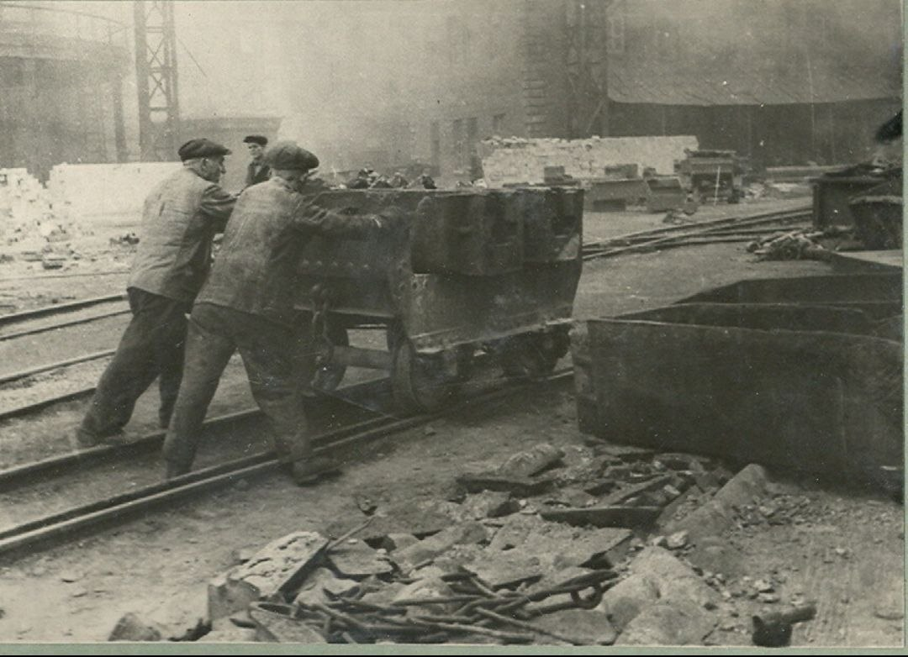
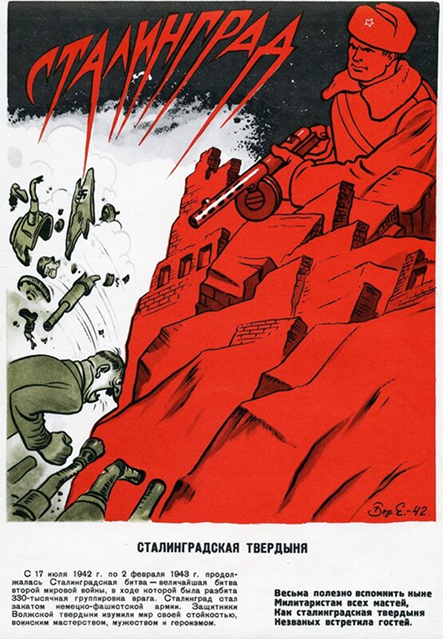
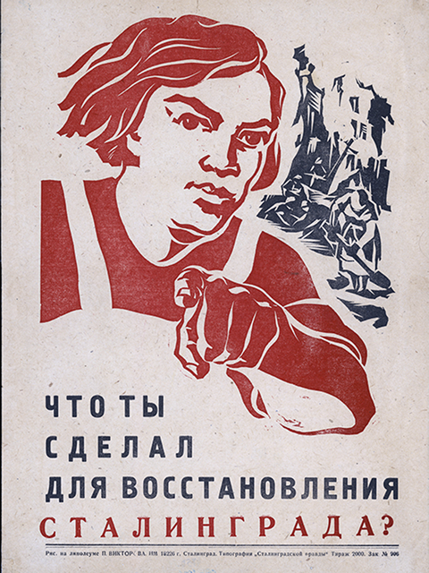
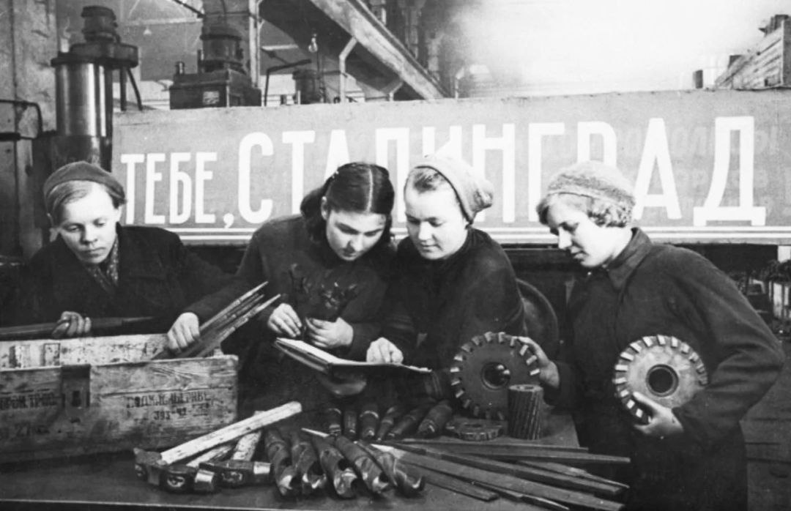
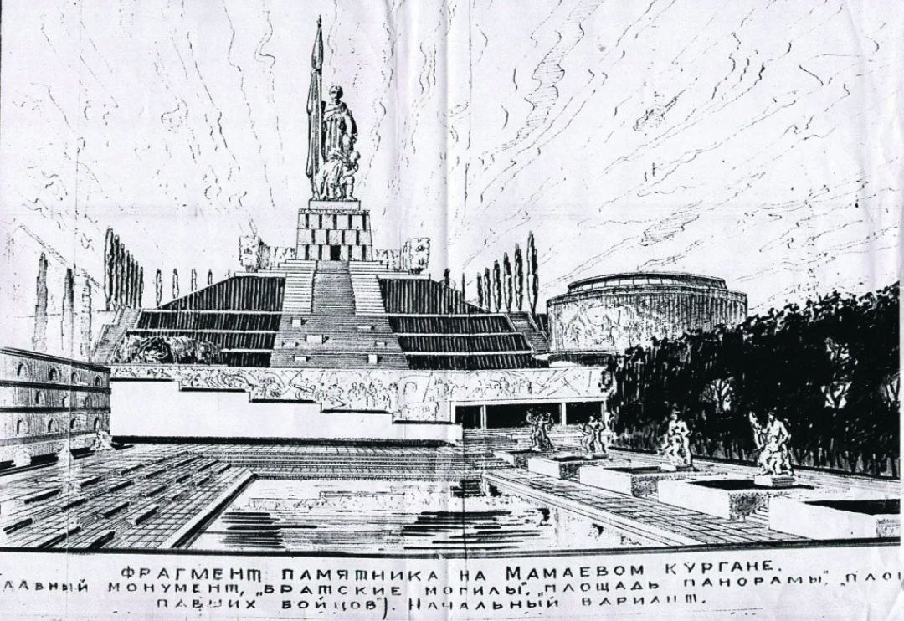
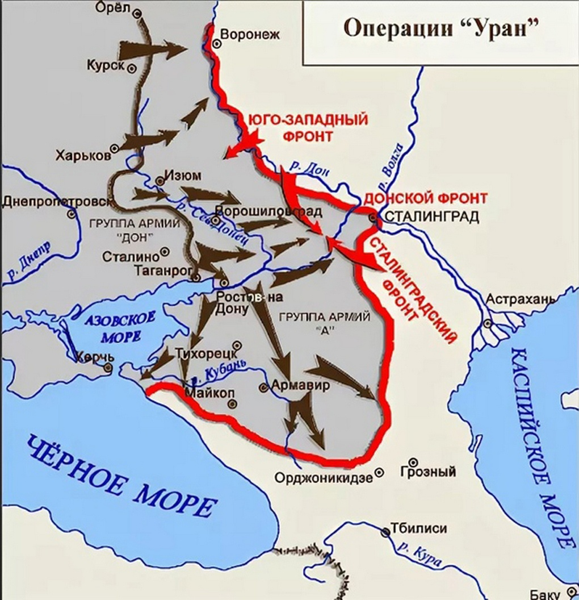
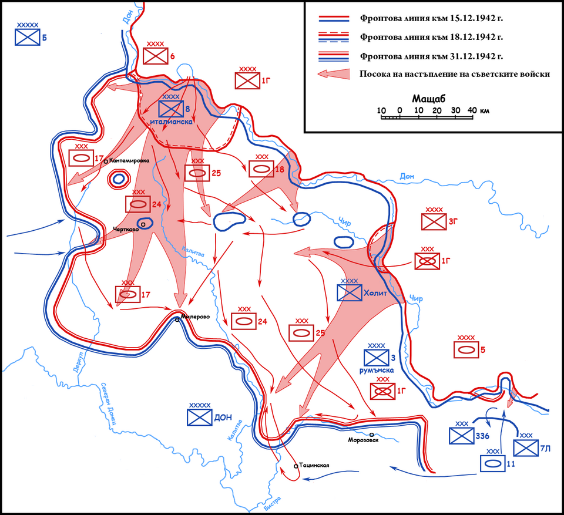
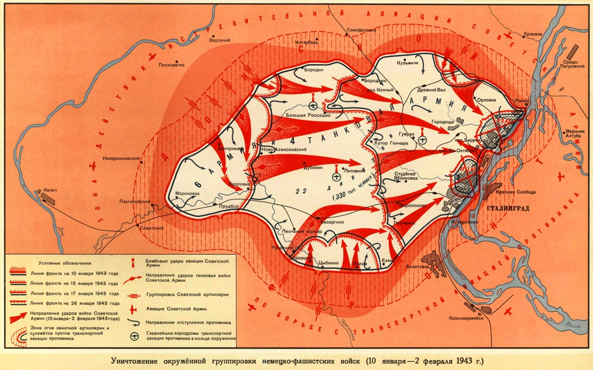

Вчера, 31 марта 1945 года на заводе «Красный Октябрь» произошел подрыв неразорвавшейся бомбы при погрузке. Товарищи! Срочно нужны руки для восстановления производства!


Мы возродим тебя в труде!
Превратим город-фронт в город-сад!
На территории почти в 100 000 км² с обеих сторон участвовало свыше 2 миллионов человек, до 2 000 танков, более 2 000 самолётов и до 26 000 орудий и миномётов.
В «котле» капитулировали свыше 2 500 офицеров и 24 генерала во главе с фельдмаршалом Паулюсом.


Враг превратил наш цветущий дом в пепел. 98% жилого фонда разрушено.
Но гвардейцы труда — каменщики, инженеры, чернорабочие — уже дают первую продукцию:
Тракторный завод ожил, «Красный Октябрь» дает металл.
Мы помним: каждый восстановленный дом — это снаряд по послевоенной разрухе!

Вчера, 31 марта 1945 года на заводе «Красный Октябрь» произошел подрыв неразорвавшейся бомбы при погрузке. Товарищи! Срочно нужны руки для восстановления производства!

Товарищи! Присоединяйтесь к Черкасовскому движению! Совместными силами мы отстояли Сталинград и восстановим его во что бы то ни стало! Обращайтесь в профсоюзы и райкомы! Присоединяйтесь!

Требуются рабочие руки! Штукатуры, столяры, сварщики, чернорабочие! Любые свободные руки найдут место в нашем правом деле!

Проект Акопяна по восстановлению города победил! Сталинград будет величествен в вашем труде!


